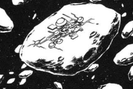

JDEG Jupiter Management HQ JDEG Jupiter Management HQ
Space 2 days from Jupiter, JDEG HQ Asteroid Fortress with attached Asteroid Mine A tremendous asteroid closer to the size of Luna II and AXIS than to Solomon and Pezun, the massive JDEG headquarters currently houses the might of its citizenry, although was originally used as a waystation to assist fledgling Jupiter Energy Fleets in the asteroid belt on their way to Earth. The story of the JDEGs colonization of Jupiter and eventual breaking away from the Earth Sphere is a simple one. Throughout generations of Jupiter Energy Fleets making long trips to and from the Jovian sphere, they eventually began bringing their families, who settled on the various waystations at the far end of the solar system. It was only natural that eventually this asteroid fortress changed from a management headquarters to more of a city, housing the JDEGs political center and its populace. It is rumored that the Jovians have begun their own colony construction in the Jupiter Sphere. Paptimus Scirroco A man with an unhealthily large amount of Charisma, Scirroco is a known newtype and an excellent pilot, a nobleman of the JDEG and heavily involved in its politics. He has a way with people, seducing them to his cause with a mysterious aura, and seems especially good at attracting women to serve under him. JDEG Jupiter Management HQ  |